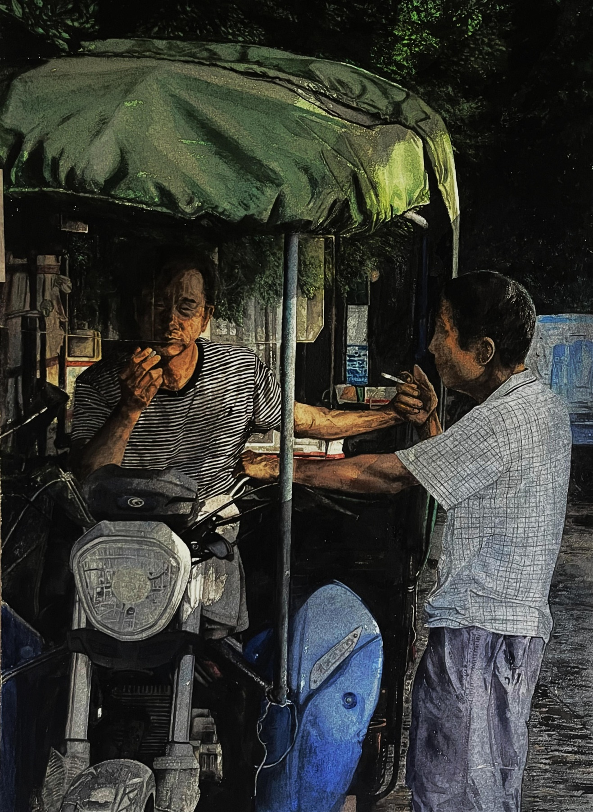

Conversation
闲谈

- Artwork ID / 作品编号
- KW-W-000047
- Year / 年份
- 2023
- Medium / 媒介
- Watercolor on paper / 纸本水彩
- Dimensions / 尺寸
- 103 × 79 cm (H × W / 高 × 宽)
Conversation is inspired by everyday life in a coastal town in Guangdong. Warm evening light filters through a sunshade and falls gently across two people engaged in conversation, giving an ordinary street scene a quiet sense of warmth and intimacy.
《闲谈》取材于广东沿海乡镇的日常生活。夕阳的光线穿过遮阳篷，落在交谈的人物身上，为平凡的街头场景赋予了温暖而宁静的气息。画面记录了一次短暂而自然的相遇，也保存了乡镇生活特有的人情温度。